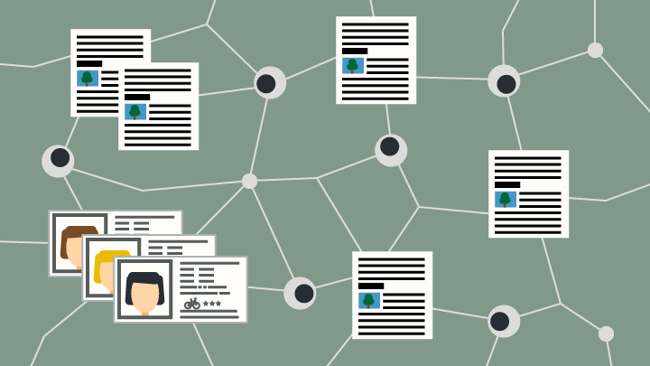
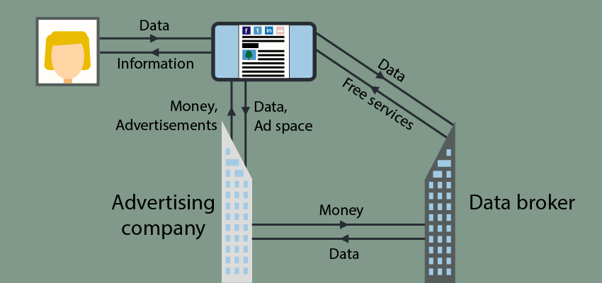
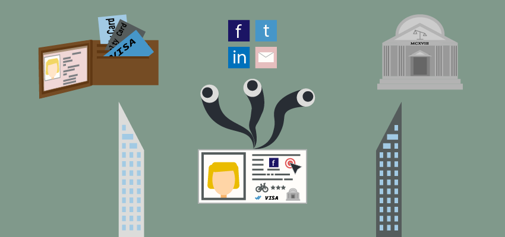

When you're online, you're being watched. Not just by the websites you visit, but also by advertisers and data brokers behind the scenes. Your behavioural patterns and interests are registered, turned into profit. Where do these companies get their data and what do they do with it?
While writing this post, one of the largest data abuse scandals is unfolding around Cambridge Analytica. For the first time, the full negative potential of big data becomes visible to the public eye. Facebook is the main data collector in that scandal, but it's by far not the only big boy in the market.
On most websites you will find a set of expected functionalities. You can share your posts on social media, leave comments, some advertisements and some visitor analytics data is being gathered. What you often don't notice is that a lot of these services are provided by third parties, who track you without your knowledge or explicit consent.
It's exactly this trend that's troubling for us, the consumer. As a visitor, we're there to visit the website and get access to its content. Most of the time, the content is freely accessible, even if that means an advertisement here or there. This allows the website to make some money from our visits, so we comply.
What they don't explicitly tell you is that every third-party service can and often will collect your data for commercial use. Some are harmless, such as anonymised data to get an overview of the types of browsers that are in use. Others, such as advertising companies and data brokers, compulsively collect your data to monetise it.
Underneath all of this is the main business model of the internet: targeted advertising through surveillance. It's an enormous industry, with the digital advertising business predicted to reach a staggering $280 billion in revenue in 2018. This whole industry runs on data, always hungry for more of the digital gold. So how exactly does it work? Where do they get all your data?
Targeted advertising: a quick and dirty
Advertising is quite basic in its premise: you rent out some (digital) real-estate to advertisers in exchange for money. This is often set up by a third party: the advertising company. In the digital space, this gets more complex as these companies can and do utilise data to present you targeted advertisements.
Whenever you visit a website that uses third-party services, information about the page and the visitor can be extracted by these third parties. They then store some information in a cookie, which is a small piece of text that allows them to identify you on your next visit. There are more advanced ways to do so, but you don't need to know about them for the purpose of this article.
What's so great for advertising companies is that multiple websites use their services. Consider the case where you visit a web shop to look at shoes. By doing this, you pick up a Google Doubleclick cookie. With the use of this cookie, they can identify you when you read a news article on a website that also uses their services. And since they know you looked at those shoes earlier, they offer you a personalised advertisement for shoes.
This goes even further nowadays through a method called remarketing. This allows the web shop you visited earlier to buy advertising space targeting visitors that visited their site earlier. That's why, after visiting a web shop, it's not uncommon for you to see advertisements for that same web shop or product once again.
For advertising companies, the true beauty of this model lies in the fact that every time you visit a website that uses their services, they learn more about you. Let's say your visit to the web shop was triggered by reading a fashion article that mentioned those shoes. If the fashion website used any Doubleclick services as well, they could now inform advertisers that you might be interested in a specific fashion trend.
Although we can go on about how much data you can get from just a few visits, it should be clear that online tracking allows them to learn a lot about you. If you combine that with data from similar individuals, it's easy to determine patterns in behaviour and perhaps even predict what outfit you want for the next season.
A true information war
Since targeted advertising is the go-to business model of the internet, advertising companies are trying to collect as much data on you as possible. This is where the surveillance kicks in. The one who can collect the most data on you can serve you the best advertisements. As stated by Omar Tawakol, the general manager of Oracle Data Cloud, "this is an information war. This is 100% about having more information about the customer."

To gain some insight in the extent of their data, I reviewed a report by AddThis (pdf). AddThis allows you to freely place several tools for social media buttons and popups on your website. The report shows the demographics and behaviours of people interested in technology, accumulated from visitor data of the over 15 million websites that use their tools.
The attributes in the AddThis report go into incredible detail on their customer base. It shows us the age categories of the audience, income brackets, lifestyle (e.g. work at home moms) and so on. It even goes down to the level of hobbies, brands, social sharing habits and TV shows. Where it gets interesting, or creepy depending on your definition, is when they show the aggregated purchasing habits. "Powered by VISA" it proudly states at the top.
Data for sale
It raises the question of where they get all that data. VISA is an obvious one now, but what else lies below the surface? Advertising companies get their data from two types of sources. The first are first-party sources, which are companies with whom the customer has a direct relation. Maybe they purchased something from that party or perhaps they used their products. This also includes data the company itself collects through the tracking mentioned above.
The second source are third parties. This source is comprised of thousands of companies that specialise in data gathering and analysis: data brokers. In the most general sense they collect data from various sources to construct user profiles. The most well-known example of these are credit score companies such as Equifax, who construct credit profiles based on data they collect.
The big boys of advertising are buying up data brokers by the dozen nowadays, so the distinction between advertising companies and data brokers is fading. Even so, we're still left with the question of where they get their data from. They're very secretive about it, but I managed to uncover quite a bit.
Clickstream Data
One of the major sources of digital data is clickstream data. This refers to all data captured from your online browsing behaviour. It's gathered through the same tracking mechanisms as mentioned above. These trackers are often disguised as free services, for example website analytics or social sharing buttons. Our previous example, AddThis (nowadays owned by Oracle), is one of these, offering their data for use in targeted advertisements.
Search Data
This one shouldn't come as a surprise. What you search for online is stored and used for advertising. Most major search engines run their own advertising branch, such as Google Ads, Bing Ads and Yahoo Gemini. There are some exceptions that don't track you (e.g. DuckDuckGo and StartPage for example), but these don't come close to the big boys in market share.
Metadata
One of the biggest fallacies on data collection is that metadata doesn't say much about users. Metadata tells you who communicated with whom, when they did so and in case of email the subject. Advertising companies love this information, as it tells them a lot about you. Take a look at this article to see how much metadata reveals about someone.
Let's illustrate this with an example. Facebook can't see the contents of WhatsApp messages, but they can see its metadata: who sent it, who it's for and when it was sent. You can see how often people communicate and with who they communicate. This allows them to craft an elaborate social network based on your communications and those of the 1,5 billion other active users.
What's so telling about this data is that we are very prone to hang out a lot with individuals that have similar interests. By collecting who you have contact with the most, they can group users together and target their advertisements to shared interests.
To determine how much that data can be worth, all we need to do is turn towards Facebook's acquisition of WhatsApp. They paid an approximate $19.3 billion for the app in 2014. At that time, WhatsApp had roughly 450 million users, giving each user's data a value of $42. That's a ballpark estimate considering the growth potential, but it says a lot about the value of your data.
Even though Facebook promised to keep their social media platform and WhatsApp separated, it only took them 2 years to discard that idea. In 2016, we learn that Facebook will use WhatsApp data for its advertising business. Their net income tripled that year and grew even further in 2017, even though their user base had no discernible growth trend. There may be no direct relation, but it may just as well be that they're able to advertise more effectively. Ever since, European institutions have been bugging Facebook to stop doing this.
Purchase Data
From the AddThis insights report we learned that VISA is supplying information about their customers to paying parties. On top of that, there's also web shops using this information for internal purposes and selling it to interested parties. Even offline stores participate by asking their customer base for their email addresses and postal codes. One of the biggest used to be Datalogix, which is now also owned by Oracle (notice a trend here?), which had insights in over $2 trillion in consumer spending. This data was gathered from, among others, store loyalty cards.
These sources are sometimes problematic, as they can involve individuals that aren't even of the legal age of existence yet. Companies such as Experian track life event triggers, including expecting parents and by extension they collect data on the yet unborn baby.
Social Data
The next big data source is what we, the consumers, actively place online. Anything regarding social media will be used. From sharing a post on Facebook to marking books as 'read' on Goodreads, it's what you pay with for using the platform.
Social data also involves sharing of articles and on which platforms we prefer to do so. To pick up AddThis once again, they can see that you shared a certain article to a social platform. This data says something about your interests, while at the same time giving insight in the platforms the group you're part of prefers.
Government Data
Governments have a tendency to disclose data to the public. The most obvious and harmless way to access some of this data is by open data sources, such as U.S. census data. This data is shared because it's gathered in a public function and general enough to disclose to the public. But when coupled with your IP address or your postal code, it says something about the likelihood you belong to a certain demographic.
Then there's also government institutions that sell your personal data directly. One such example can be found at the sale of political party registration and voter data in the U.S. European countries seem to shy away from selling their citizen's data as citizens are generally more outspoken on such issues if they occur (for example in the U.K.).
Not all data is for sale
Lucky for us, some data is protected by strict legal safeguards. While these may differ per country, it generally includes highly sensitive data such as your medical history and, while often allowed with explicit consent, biometrics (e.g. facial recognition and fingerprints). The debate about the use of biometrics is still on-going, so we'll have to keep an eye on that.
That doesn't mean they don't collect information about your health. If data collectors know you're interested in dieting, sports or something else considered healthy, they can make predictions about you. Even if they're inaccurate for you personally, they often get it right for a larger population with the same patterns.
There's also an ongoing debate in the Netherlands, and with that a bigger part of Europe with similar legislation, about the use of telemetry. Telemetry is the collection of data at a certain location and sending it elsewhere for analysis. One example of this clash comes from Microsoft, which has been called out for their illegal collection of data in Windows 10 by the Dutch Data Protection Authority. It's still waiting for the outcome on that one.
What we know so far
Advertising companies and by extension data brokers gather data from all sources they can get their hands on. All this just to make a pretty penny. The major issue in this is that everyone and their grandma can sell your personal information if they want to, especially if the companies are based in less-regulated countries.
It goes without saying that this is an infringement on your right to privacy. By combining data sources that were never meant to be combined, we're now greeted by highly targeted advertisements. Even though a lot of the date they have may be wrong or outdated, it's still astounding to think about what these businesses know about us.
One of the major problems in all this is that of often uninformed website administrators, which allow companies like Google and Oracle to have such a dominating position. AddThis (Oracle) has a market share of 68,1%, appearing on over 15 million websites, and Google Analytics can be found on 75,6% of all websites that use analytics. Their services are free and well-built, which makes it hard for a website administrator to justify not using them. Since they aren't the ones paying with their data, can you blame them?
And even if the website administrator has a clear incentive to use their services, they pay with your visitor data. If you place advertisements on your website, the visitor is also being tracked through those same advertisements. There's never a good deal for the visitor. As long as website administrators don't care much for their visitor's privacy, it's those exact visitors that end up paying with their data.
The online data value stream
With all this data gathering and profiling, it's nearly impossible to arm yourself against it as a customer. You need to have top of the line know-how and spend a lot of effort on it. There's only one thing to be done: follow the money and target those services that collect and/or sell your data.
To get a better insight in this, I've mapped the value stream of the internet to give an insight in this hidden data economy. A value stream is anything of (potential) value, be it data or plain money. This value stream mapping was created to illustrate a regular joe website, where you get some interesting information.

When you visualise it like this, it's extremely clear that the visitor exchanges their data for information. This data is collected by the big advertising companies and data brokers, leaving the website administrator with some meager advertising income. It's those companies under the surface that are the big winners of this data economy.

When we combine this basic value stream with the data sources we've learned above, we see a picture of a consumer who uses all kinds of services. By doing so, he doesn't only pay with his wallet, but also with his data. It's impossible to fight this rampant data collection if you do anything that uses personal data.
The negative potential of data collection
As mentioned in the introduction of this article, this data collection can have serious and disruptive consequences. While advertisements are mostly harmless, the data gathered to deliver these targeted messages aren't. Over the past years, we've seen an increase of the use of this data in the political field, allowing politicians to specifically campaign to an audience.
At the time of writing, the Cambridge Analytica (CA) scandal is still unfolding. It started off with reports from The Guardian, The Observer and Channel 4 News, who worked together with a whistleblower. In The Guardian's profile of Christopher Wylie, he shares the tale of how they used the data they gathered from Facebook to influence the U.S. elections and the Brexit vote.
What makes the CA case so unique is that they used military psychological warfare tactics to convey their messages. They used research that linked user behaviour on Facebook (more specifically their likes) to personality types. That means that they were able to send highly targeted messages tailored specifically to what would work best to influence that individual. CA actively tried to mess with your worldview, rather than promote ideas alone.
The article also revealed that the efforts of this company weren't limited to these major two elections: "SCL Elections [a closely related company] had used a similar suite of tools in more than 200 elections around the world, mostly in undeveloped democracies that Wylie would come to realise were unequipped to defend themselves."
In 2013, Snowden showed us that the NSA collects everything about everyone, and now this. Incidents such as these eat at the foundation of our democracies. Abuse of the vast amounts of data available present new challenges to our societies. The negative potential of all this data is so enormous that the scale of it all seems unfathomable.
Stopping the surveillance
While it's technically difficult and unfeasible for every consumer to escape this digital surveillance, we can take some action. While what you can do may feel like a drop in the ocean, a collective voice will be listened to. No longer can we afford to ignore the impact of digital technologies in our elections, because its these technologies that are used to influence them.
As of right now, the data collectors aren't listening to anything but the strong arm of the law. The only way to combat this is to call for increased regulation and consumer data protection. The new European data protection law is a step in the right direction, but we shouldn't be content just yet. Further regulation should be in place to ensure that data abuse has severe penalties.
On a smaller scale, you can help those in your surroundings by creating awareness. The CA reveals show the impact data collection can have in the mainstream media, but often people don't know where to start with their awareness. Point them towards privacy alternatives for services, for example the overview by privacytools.io.
Do the same for website administrators. If websites you visit frequently have a lot of trackers or place a lot of cookies, you can approach them, ask them to change it. In my experience they are often unaware of the consequences of the free tooling they use. Let them know and they can do their part.
The final and perhaps most impactful manner to stop limit this data surveillance is to share less. Think of what you do online and consider how it may affect you later in life. With the CA whistleblower, we now have an insight in what can happen with all that data you share. Be wary of any party that offers free services, from Gmail (scanning your inbox for advertisements until 2017) to Facebook to any other service. Be critical and aware of your privacy concerns.
Closing thoughts
As the negative impact of mass consumer surveillance becomes concrete for the first time, we can state that there's a problematic side to collecting this data. In moving towards a further digitalised society, including smart cities, the need for strong regulatory protections and high awareness becomes obvious.
Advertising companies and data brokers remain secretive about the data they collect. Going by the current landscape, we will never know the full extent of it. In the same line we won't know how far their profiling goes and whether they use the same methods as Cambridge Analytica. The internet as the ideal of democratised information is being broken by the out of control data industry. The longer this continues, the greater the potential harm to our lives and our societies.


Comments
Enabling comments requires your consent for Disqus to place cookies. You can review their privacy policy here.